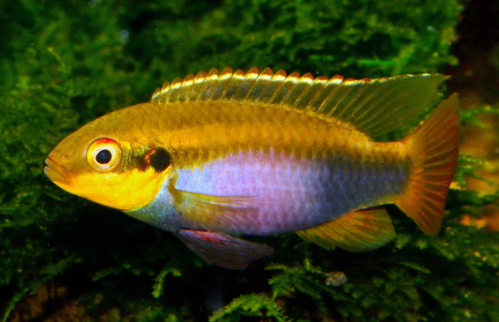

Systématique
- Ordre : Cichliformes
- Famille : Cichlidae
- Genre : Pelvicachromis
- Espèce : P. roloffi
- Auteur : Thys van den Audenaerde, 1968

Pelvicachromis roloffi est un cichlidé nain fluviatile originaire des régions côtières de l'Afrique de l'Ouest. Nommé en l'honneur de l'aquariophile allemand Erhard Roloff, il est considéré comme l'un des membres les plus petits et les plus discrets de son genre. Son corps est élancé, fusiforme et légèrement comprimé latéralement.
Le mâle atteint une longueur totale d'environ 8 à 8,5 cm, tandis que la femelle est nettement plus petite, mesurant environ 6 cm. La coloration de base est gris-brun avec une bande latérale sombre. Contrairement au célèbre P. pulcher, les couleurs sont moins flamboyantes au repos, mais les mâles peuvent arborer des reflets bleutés sur la nageoire caudale. La nageoire dorsale présente plusieurs taches sombres, dont les dernières sont plus marquées.
Cette espèce possède un tempérament calme et discret. Pelvicachromis roloffi vit en couple monogame et occupe les strates inférieures (milieu et fond) de l'aquarium. Il est territorial, surtout en période de reproduction, mais se montre peu agressif envers les espèces non territoriales de pleine eau.
En aquarium, il nécessite un environnement sécurisant avec de nombreuses cachettes constituées de racines, de bois et de grottes (noix de coco, pots). Le substrat doit être composé de sable fin, car les poissons aiment le fouiller et l'utiliser pour aménager leur site de ponte. Il est sensible aux polluants organiques et aux variations brutales des paramètres de l'eau.
Mode : Ovipare, pondeur sur substrat caché (cavitole).
Le couple choisit une cavité pour y déposer ses œufs. Pendant la parade, la femelle devient plus colorée, exhibant un abdomen violet intense dont les couleurs s'intensifient lors du frai. Elle présente souvent des taches sombres bordées de jaune à la base de sa nageoire dorsale lors de cette phase.
La femelle s'occupe de la ventilation et du nettoyage des œufs dans la grotte, tandis que le mâle surveille les abords du territoire. Après l'éclosion, les parents guident le nuage d'alevins à travers le bac pour le nourrissage. La reproduction nécessite impérativement une eau très douce et acide (pH entre 5.5 et 6.5) pour garantir la viabilité des œufs.
Dimorphisme sexuel : Bien marqué. Le mâle est plus grand, possède des nageoires dorsale et anale plus pointues et une coloration globale plus terne. La femelle est plus petite, a un abdomen plus rebondi qui devient pourpre/violet lors de la reproduction, et ses nageoires impaires sont plus arrondies.
Espérance de vie : 4 à 6 ans en aquarium dans des conditions optimales.
Pelvicachromis roloffi fréquente les petits ruisseaux et les rivières boisées de Guinée, du Sierra Leone et de l'ouest du Libéria. Il se trouve principalement dans les zones peu profondes près des berges. L'eau de son habitat naturel est extrêmement douce (conductivité parfois inférieure à 10µS), acide et souvent teintée de tanins.
Le fond est composé de sable fin mélangé à des branchages, des racines et des feuilles mortes jonchant le sol de la jungle. La végétation aquatique y est souvent absente ou limitée à des plantes palustres comme les Anubias en bordure.
Répartition

Origine naturelle :
- Afrique de l'Ouest : Guinée (Bassin du Kolenté), Sierra Leone, Libéria (Partie ouest).
- Localité type : Sierra Leone.
Statut UICN : Préoccupation mineure (Least Concern). L'espèce est occasionnellement disponible dans le commerce spécialisé, souvent maintenue par des amateurs avertis de cichlidés nains africains.
Paramètres de maintenance
Température : 25 à 28 °C.
pH : 5,0 à 6,5 (Doit impérativement rester sous le neutre).
GH : 1 à 5 °dGH (Eau très douce indispensable).
Courant : Faible.
Volume conseillé : Minimum 80 L pour un couple seul.
Régime alimentaire
Régime : Omnivore à tendance carnivore.
Dans la nature, il consomme des petits invertébrés, des larves d'insectes et des détritus organiques.
En aquarium, il accepte les nourritures sèches de qualité (granulés, paillettes), mais son éclat et sa santé dépendent d'apports réguliers en nourritures congelées ou vivantes (artémias, daphnies, vers de vase blancs).